Full Documentation
About Me
I'm a robotics engineer focused on building mechanisms that are reliable, fast, and competition-grade. My work spans FTC robotics, mechanical design, control systems, and rapid iteration under real-world constraints.
Every season in FTC is different: a new game, new rules, new field. That means designing, building, and competing with a completely new robot every year. I thrive in that environment. I take problems—mechanical failures, design constraints, performance targets—and solve them through careful engineering, testing, and iteration.
My focus is on the details that matter: precision gear ratios, friction loss analysis, load calculations, and systems that work in the chaos of competition. Whether it's a shooter that hits the same spot every time, a transfer system that never jams, or a deposit arm optimized for speed, I build mechanisms that perform when it counts.
This portfolio documents the mechanisms, engineering decisions, and design iterations behind the systems I've built. Each page includes calculations, CAD context, and the reasoning behind design choices.
FTC Robotics — Team 20744 “24Karat”
I am a core engineer on FTC Team 20744 "24Karat," where I design and build competition-grade mechanisms that win matches. Every year brings a brand-new game, which means every year I design, build, and deploy a completely new robot from scratch.
This section documents the mechanisms I designed, iterated on, and deployed—from concept through competition. You'll find detailed technical breakdowns, engineering decisions, failure analysis, and the design solutions that worked under pressure.
Mechanisms Overview
The FIRST Tech Challenge (FTC) is a global competition where teams design 18-inch robots to compete in a new game every season. Unlike longer engineering projects, FTC demands rapid iteration: a new game reveal, 6–8 weeks of design and build, then competition season. There's no room for "we'll get it right next year." It has to work now.
This overview walks through the mechanisms I designed and built across the 2024–2025 and 2025–2026 seasons. You'll see the problems I faced, the solutions I chose, and why those solutions mattered. Each mechanism has a dedicated deep-dive page with calculations, CAD, and iteration history.
FTC Seasons
Every season brings a completely new game. New scoring rules. New field. New robot design. Below are the seasons I competed in and the mechanisms I built.
2025–2026 — DECODE™
A shooting-focused game where robots collect 5-inch spheres and score them into corner goals. The game is won by teams that can shoot consistently, quickly, and under pressure.
What I designed: Shooting Mechanism (V1–V3 iterations), Tipper Park endgame mechanism.
2024–2025 — INTO THE DEEP™
A precision placement game where robots score triangular samples into baskets and onto bars at multiple heights. Speed, precision, and reliability all matter equally.
What I designed: Vertical Lift, Linear Extension, Transfer Claw (3 iterations), 2-Bar Deposit Arm.
2025–2026 Season — DECODE™
DECODE™ is a shooting-based game where robots collect 5-inch spherical artifacts and score them into corner goals. The game demands three things: consistency (every shot must go the same place), speed (cycle time matters), and reliability (one jam costs you matches).
What Robots Had to Do
- Collect artifacts from the field.
- Shoot them accurately into corner goals.
- Navigate field zones for additional points.
- Complete a Base park at the end of the match.
What I Worked On
- Shooting Mechanism (V1–V3): turreted shooting system for multi‑angle scoring.
- Tipper Park Mechanism: compact tipping solution for consistent Base ranking point.
Field Layout
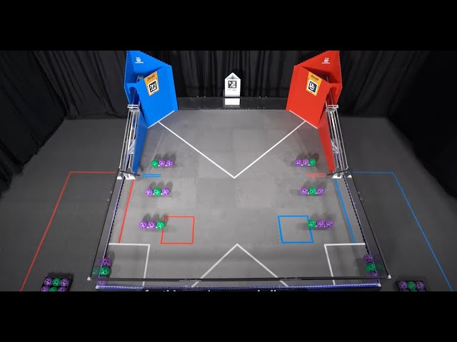
2024–2025 Season — INTO THE DEEP™
INTO THE DEEP™ is a precision placement game. Robots pick up triangular samples and score them into baskets or onto bars at multiple heights. The challenge: every movement must be fast, smooth, and precise. A jerky arm causes drops. Misaligned claws cause jams. Poor cycle time loses close matches.
My work focused on the mechanisms that controlled the samples after pickup: the lift, extension, transfer, and deposit systems.
What Robots Had to Do
- Collect samples from the field.
- Lift them to multiple scoring heights.
- Place them accurately into baskets or onto bars.
- Complete endgame tasks such as climbs or parks.
What I Worked On
- Vertical Lift: dual-motor architecture and counterspring tuning.
- Linear Extension System: horizontal extension on a linear slide for scoring reach.
- Transfer System: extensive iteration leading to an active vectoring claw.
- 2‑Bar Deposit Arm: optimized linkage for controlled drop-offs.
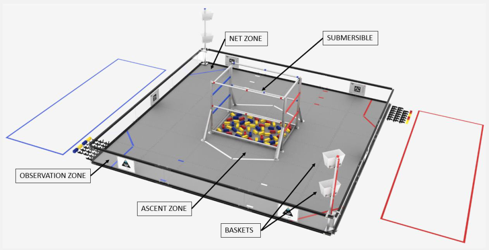
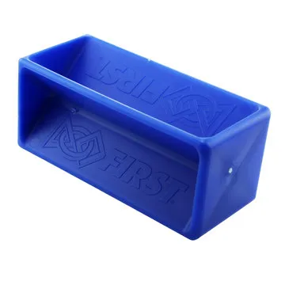
INTO THE DEEP — Full Robot Overview
Building a competitive FTC robot is a team effort. For our INTO THE DEEP competition robot, I led the design and manufacturing of the V2 platform, responsible for the extension system, lift architecture, transfer claw, and deposit arm. My goal was simple: design these subsystems so they worked seamlessly with my teammates' drivetrain, intake, and control systems.
Below is a breakdown of the full system to show how my mechanisms fit into the bigger picture. For detailed calculations, CAD decisions, and iteration history, see each mechanism's dedicated page.
Team Subsystems Overview
- Custom Drivetrain: Built using four 6061 aluminum plates that were custom cut on an industrial laser cutter to optimize our chassis footprint.
- Vertical Lift: Because the lift is the longest part of the cycle, I implemented two synchronized motors geared at 5.7:1 with 3D printed sprockets and chain, doubling the previous lift speed. It utilizes a 3-stage MiSUMI structure and a down-string spring to manage slack when gravity outpaces the spool.
- Virtual 4-Bar Intake: A top-down, motor-driven intake. To solve geometry limitations that prevented picking up samples directly beneath the arm, I used a chain mounted to a fixed shaft to create a virtual 4-bar. This orientates the intake properly without needing a separate motor.
- Intake Rollers: Features 3D-printed TPU fingers with hooks offset at 90 degrees to automatically orient the samples vertically for my transfer claw. A bottom roller lined with surgical tubing acts like a vacuum to sweep up the pieces.
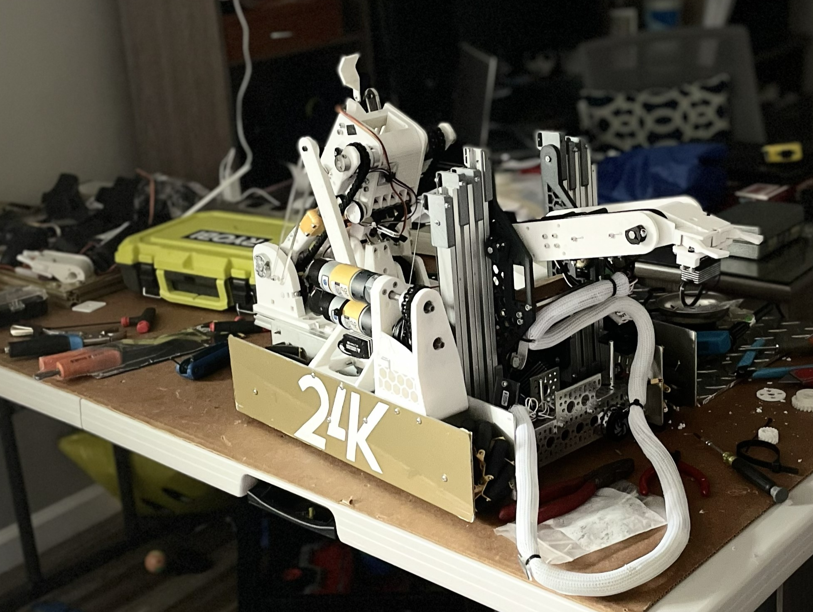
Vertical Lift & Load Management
Our vertical lift is responsible for the longest physical movement in our scoring cycle and sees the highest volume of repetitions during a match. To hit our aggressive cycle-time targets, I helped overhaul our lift architecture and load management system.
Dual-Motor MiSUMI Setup
Originally, a single motor was bottlenecking cycle speed. I moved to a dual-motor setup, which—in combination with a change in the motor ratio—completely doubled the speed of the lift.
Mechanics & Reliability
- Actuation: Powered by two synchronized motors geared at 5.7:1, using custom 3D-printed sprockets and chain to ensure perfectly matched power delivery.
- Structure: Built on a 3-stage MiSUMI slide structure, chosen for its rigidity and smooth travel under high lateral loads.
- Down-string Tensioning: The key to the spool's reliability is a counter-spring system on the down-string. Because gravity assists the lift on the way down, the spool often struggles to reel in fast enough, creating dangerous slack. The spring dynamically adapts to this slack, keeping the string tensioned and preventing derailments.
[Insert Lift Image Here]
Counterspringing
Doubling the speed of the lift introduced a new problem: high current draw and increased stall risk. To minimize the load on our dual 5.7:1 motors, I implemented a mechanical counterspringing system.
Gravity Neutralization
By attaching constant-force springs to the moving stages of the MiSUMI slides, I neutralize the gravity load of the lift. This drastically improves the system's efficiency.
- Reduced Motor Strain: The motors no longer have to lift the dead weight of the slides and the end effector; they only need to overcome system inertia and friction.
- Battery Efficiency: Lower current draw prevents battery voltage sag during rapid cycling.
- Faster Acceleration: Without fighting gravity, the motors reach their peak RPM much faster on the upward stroke.
Counterspringing Physics:
The goal is to make the net vertical force required to hold the lift steady near zero:
ΣFy = (m · g) - Fsprings ≈ 0
Where:
m · g = Total weight of all moving lift stages + end effector
Fsprings = Combined pull force of the constant force springs
By zeroing out the gravity penalty, 100% of the motor's torque can be dedicated to acceleration (F = m · a).
The goal is to make the net vertical force required to hold the lift steady near zero:
ΣFy = (m · g) - Fsprings ≈ 0
Where:
m · g = Total weight of all moving lift stages + end effector
Fsprings = Combined pull force of the constant force springs
By zeroing out the gravity penalty, 100% of the motor's torque can be dedicated to acceleration (F = m · a).
[Insert Close-Up Image of
Constant Force Springs Here]
Constant Force Springs Here]
Shooting Mechanism
The shooter is the most critical system in DECODE. It's responsible for scoring—which means it has to be consistent, fast, and reliable. A single jam or miss during a critical match point can cost you the game.
My approach: iterate relentlessly. I built three major versions (V1, V2, V3), each time testing flywheel inertia, hood angles, friction losses, counter-roller dynamics, and turret mechanics. Every design decision was validated by testing.
Version 1 — Double Vertical Flywheel
Our first prototype was a double vertical flywheel system using two independently driven 6000 RPM motors with 4‑inch wheels. While one advantage was inherent backspin mitigation, the design proved impractical for competition.
- Accuracy Issues: Variations in motor output between the two wheels caused inconsistent ball trajectories.
- Low Rate of Fire: The system struggled to maintain consistent shooting speeds due to uneven power delivery.
- Design Constraints: Between the fixed angle wheels and lightweight wheels, the launcher was oversized, too heavy for effective turret mounting, and had very little position flexibility.
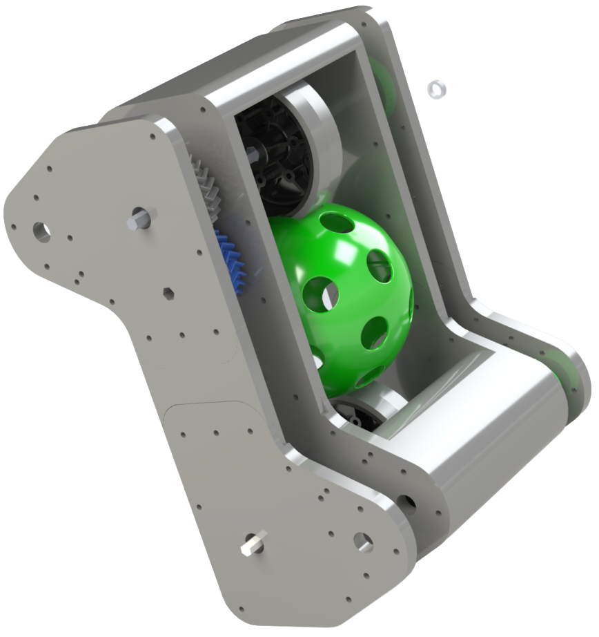
Version 2 — Servo‑Actuated Hooded Shooter
V2 moved away from the dual vertical wheels to a servo‑actuated hooded design powered by dual 6000 RPM motors. A rack‑and‑pinion mechanism allowed precise hood angle adjustment between 35° and 55°, enabling fine‑tuned shot trajectories.
Key Upgrades
- Weight Reduction: Integrating pocketed plates reduced our overall mass by 0.75 kg, improving efficiency without compromising strength.
- Turntable Bearing: A geared lazy-susan bearing at the base enabled smooth left‑right turret rotation and acted as a receiver for artifacts.
- Friction Reduction: Thrust bearings were installed at all wall interfaces to minimize resistance, lubricated with NLGI Grade 2 grease. Belts were tensioned slightly loose to reduce drag, lowering noise and motor heating.
- Counter-Roller Introduction: A belted 30A shore hardness counter-roller was added. It spun clockwise (opposite the main wheel) to remove unwanted ball backspin, increase compression, and produce faster shots. Custom 3D printed gears provided stability.
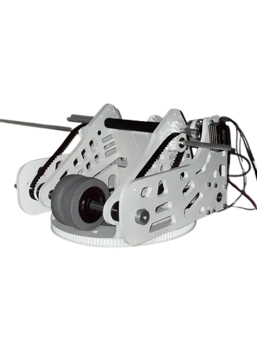
Version 3 — Final Competition Shooter
The V3 shooter includes a multitude of friction, angle, and weight optimizations to minimize cycle time and maximize reliability. PID Control ensures maximum reliability and consistency across varying battery levels.
Major Refinements
- Advanced Counter-Roller: Testing proved artifacts would bounce out of goals from excessive backspin without a counter roller. Using a gear reversal system and HTD 3 belts, I spin 2 custom molded top rollers at 9000 RPM to mitigate backspin and account for linear velocity from smaller wheels.
- Custom Silicone Molding: A 20mm 30A wheel was needed. After Andymark 40A proved too stiff (thinner rubber tore) and Colson 30A reduced contact area via its chevron shape, I created 3D printed molds and poured custom 2-part 30A silicone, yielding consistent, leak-free parts.
- Optimized Friction & Articulation: I moved from HTD5 pitch belts to GT2 and HTD3 belts. Thrust bearings were installed wherever plates had clamping forces, converting sliding friction to rolling friction. For hood adjustment, a large radius herringbone gear acts as a rack and pinion to articulate the hood around the center of the wheel.
Flywheel Inertia & Calculations
I iterated through modeling clay (V1), a solid disk (V2), and finally a pocketed ring (V3) to maximize inertia while minimizing weight. Speeding up the turret and drivetrain reduced cycle times. Adding this 592g mass stabilized angular velocity:
System Inertia:
I = ½ · m · r² ≈ 0.00172 kg·m²
Stored Flywheel Energy:
At ω = 500 rad/s → E ≈ 215 J
Ball Kinetic Energy:
Mass = 0.165 lb (0.0748 kg)
Exit velocity (v) = 20 m/s
Eb = ½ · m · v² ≈ 15 J
Conclusion:
Only ~7% of stored energy is transferred per shot. This minimizes wheel speed drop and ensures rapid, consistent launches.
I = ½ · m · r² ≈ 0.00172 kg·m²
Stored Flywheel Energy:
At ω = 500 rad/s → E ≈ 215 J
Ball Kinetic Energy:
Mass = 0.165 lb (0.0748 kg)
Exit velocity (v) = 20 m/s
Eb = ½ · m · v² ≈ 15 J
Conclusion:
Only ~7% of stored energy is transferred per shot. This minimizes wheel speed drop and ensures rapid, consistent launches.
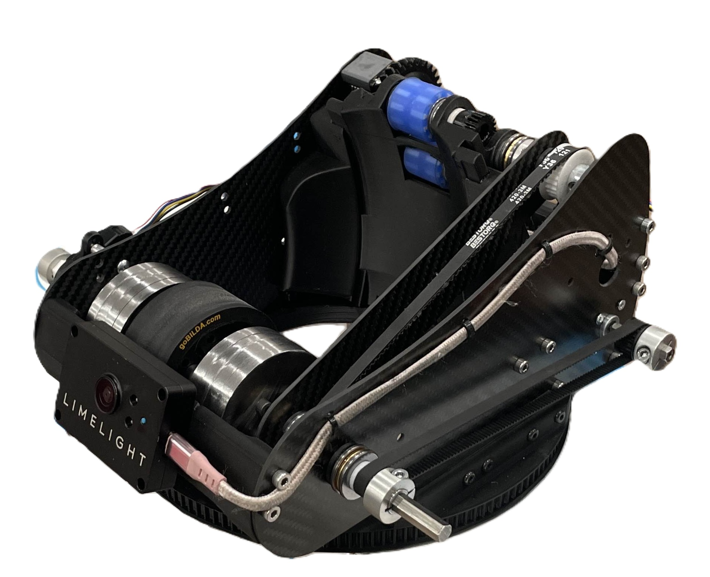
Tipper Park Mechanism
In DECODE, the Base ranking point is free points if you tip the robot at the end of the match. Most teams tried full-lift mechanisms, but they ran out of time or hit the 18-inch height limit. The solution: a small, fast tipping mechanism that could secure this point reliably while staying simple.
I built a small tipping park mechanism that cuts the robot's footprint in half while keeping mechanical complexity to a minimum.
The design uses two Axon Max servos working in parallel for redundancy, torque multiplication, and reliability under battery sag. Finite Element Analysis (FEA) was used to optimize the kicker plate—strong enough to handle the load, light enough to make a difference.
Finite Element Analysis (FEA)
To minimize physical testing time and mitigate risk, I ran a static Finite Element Analysis (FEA) study on the kicker plate. This ensured the component would be sufficiently strong under the robot's weight, while allowing optimization and mass minimization through a strategic taper in areas with lower stress loads.
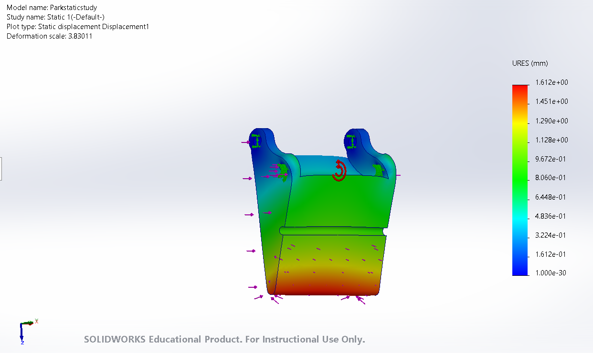
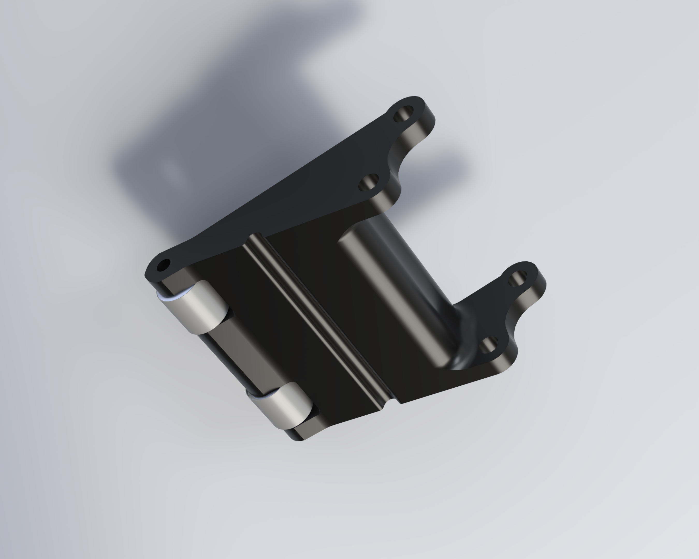
Linear Extension
The linear extension system provides the horizontal reach necessary to score samples in the INTO THE DEEP game. It is designed to be fast, stable under load, and smoothly integrated with the transfer and intake mechanisms.
Design & Actuation
- MiSUMI Linear Slides: The extension is built on MiSUMI slides because they provide an incredibly reliable and compact foundation, maximizing stiffness while minimizing the horizontal footprint.
- Power Delivery: The extension is powered by a single Axon Max servo. To ensure it has the driving force to push and pull the slides without stalling, I designed a custom herringbone gear reduction.
- Herringbone Gear Profile: Using herringbone gears ensures self-centering during operation and smooth power transmission without side-load slipping or axial thrust forces.
Gear Reduction & Torque Multiplication:
Driving Gear = 16 Teeth
Driven Gear = 120 Teeth
Ratio: 120 / 16 = 7.5:1 Reduction
Conclusion:
By gearing the Axon Max down by a factor of 7.5, we multiply our effective torque by 7.5×. This massive torque overhead easily overcomes any slide friction and ensures the intake deploys and retracts consistently under competition loads.
Driving Gear = 16 Teeth
Driven Gear = 120 Teeth
Ratio: 120 / 16 = 7.5:1 Reduction
Conclusion:
By gearing the Axon Max down by a factor of 7.5, we multiply our effective torque by 7.5×. This massive torque overhead easily overcomes any slide friction and ensures the intake deploys and retracts consistently under competition loads.
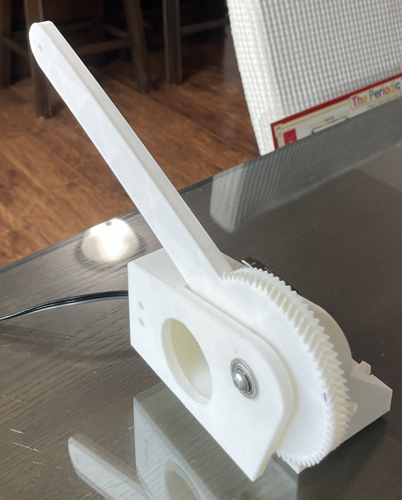
Transfer System
The transfer system is a critical handoff point: it takes samples from the intake and moves them to the deposit arm for scoring. It runs every cycle, hundreds of times per match. If it jams, slips, or misaligns—you lose time and points.
I built three major iterations. V1 and V2 were passive systems that eventually hit their limits. V3—the active vectoring claw— solved the core problem through active motor control and precision geometry. 50+ prototype versions went into this final design.
Version 1 — Passive Rubber‑Band Compression
V1 used a passive finger geometry with rubber‑band‑based compression. The rubber bands allowed the system to flex around the sample and guide it upward. Compression was adjustable by changing band count and mounting points.
What Worked
- Very low weight
- Simple, low‑part‑count geometry
- Adjustable compression using rubber bands
What Didn’t Work
- Unpredictable sample rotation
- Required near‑perfect intake angle
- No positive control — sample could slip or bounce
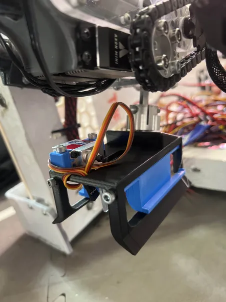
Version 2 — Torsion Spring + Micro‑Servo Gate
V2 introduced a torsion spring for more consistent preload and a micro‑servo gate to stabilize the sample during transfer. Compression remained adjustable by changing torsion spring preload.
What Improved
- More consistent alignment due to torsion spring preload
- Micro‑servo gate reduced bounce‑outs
- Better tolerance to imperfect intake angles
Remaining Problems
- Too heavy at the end of the arm
- Servo horn flex under load
- Snag points — exposed edges could catch on the sample’s triangular corners, causing jams
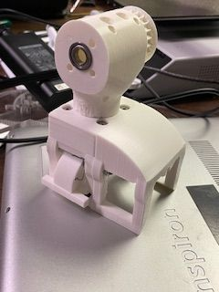
Version 3 — Active Vectoring Claw
The robot’s transfer system is one of the most important parts of a fast cycle, as it is the most common culprit of lost time and reliability. To ensure a firm and consistent motion from the intake into the deposit, we replaced the passive systems with a compact, Axon Mini–powered claw.
Before arriving at this design, we designed, manufactured, and tested 50+ versions of both passive and active systems. We ultimately determined through rigorous testing that an active motion done by a servo produced the highest performance.
Claw Geometry & Mechanics
- Funneling Vector Geometry: The claw utilizes funneling geometry to conform to the shape of the sample and the intake, actively vectoring the pieces into position.
- Maximized Surface Contact: The internal shape matches the sample perfectly, providing a large amount of surface contact for a stable, positive grip.
- Self-Centering Herringbone Gears: Each finger of the claw uses a herringbone gear. They are self-centering by nature and allow multiple teeth to contact each other simultaneously, drastically reducing the chances of slipping or stripping.
- Lightweight & Enclosed: No snag points with fully enclosed geometry, allowing smooth and predictable handoffs.
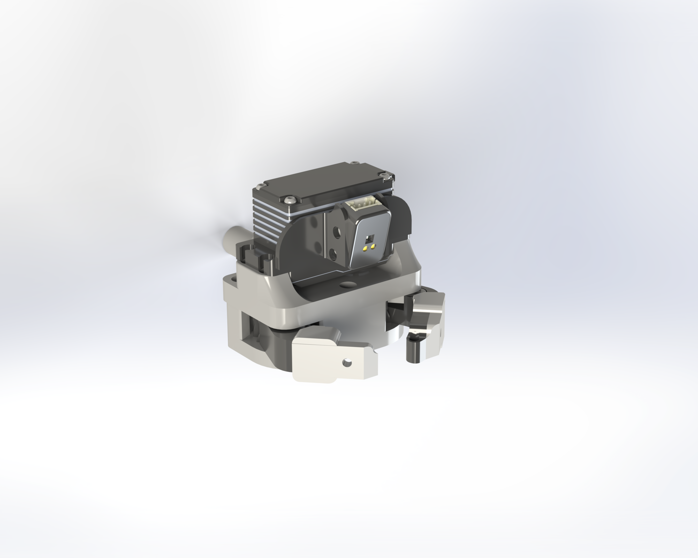
2‑Bar Deposit Arm
Our arm is a simple 2-bar mechanism that moves the sample from the intake and brings it to the scoring baskets and bars. At the back, it is powered through a 1:1 aluminum gear connected to an Axon Mini to maximize the speed of the movement.
Additionally, we have another degree of freedom that we call pitch, which pivots the end of the arm to optimize the drop-off position. The goal was a fast, predictable motion path with low mechanical complexity.
Torque & Payload Calculations
To ensure our arm could reliably lift the extension slides and the end effector, we calculated our required torque at a 51 cm extension length:
Torque Equation:
τ = r · F · sin(θ)
τ = r · m · a · sin(π/3)
τ = 51 cm · X · 0.87
System Specs:
2× Servo Boosted Axon Max+ servos provide 68 kg·cm of torque.
With a 1:2.6 reduction, we have enough torque to move an end effector weighing up to 4 kg.
Conclusion:
Since our design goal was to keep the end effector under 1 kg, this massive torque overhead easily accounts for any mechanical inefficiencies from the linear slides and servo linkages.
τ = r · F · sin(θ)
τ = r · m · a · sin(π/3)
τ = 51 cm · X · 0.87
System Specs:
2× Servo Boosted Axon Max+ servos provide 68 kg·cm of torque.
With a 1:2.6 reduction, we have enough torque to move an end effector weighing up to 4 kg.
Conclusion:
Since our design goal was to keep the end effector under 1 kg, this massive torque overhead easily accounts for any mechanical inefficiencies from the linear slides and servo linkages.
EV C 2025-2026
Electric Vehicle C project — use the sidebar to view V2 (autonomous) or V1 (prototype). Learn more →
Science Olympiad — Overview
Science Olympiad is a team‑based STEM competition where students design, build, and test small engineering projects across many events. It emphasizes rapid iteration, robust designs, and clear experimental documentation. This portfolio highlights work in the Electric Vehicle C (EV‑C) event for the 2025–2026 season. Read the full EV‑C documentation →
Electric Vehicle C — 2025-2026
EV‑C Autonomous Control System (v2, 2026)
Portfolio Summary — Electric Vehicle C Autonomous Control System (2026, v2)
Odometry‑Driven S‑Curve Navigation with inertial sensor fusion, time‑targeting, and dynamic stability control.
I engineered a fully autonomous Electric Vehicle C robot capable of completing a 7–10 meter precision run with optional bonus‑can navigation using a dynamically‑generated S‑curve anchored to forward odometry. The v2 control stack integrates wheel‑encoder odometry, heading fusion using an inertial sensor (a device that measures rotation rate), lateral‑position control, adaptive power scheduling, and time‑targeting to achieve competitive performance.
Competition Results
Regional: 6th place — State: 11th place (2026 season).
Core Capabilities
- Hybrid odometry and inertial navigation — the robot estimates forward travel from wheel encoders (which count wheel rotations) and combines that with an inertial sensor that measures rotational rate. The inertial data is smoothed by a low‑pass filter (a smoothing filter that reduces high‑frequency noise) before fusion to improve heading stability.
- Odometry‑anchored S‑curve navigation — lateral S‑curve motions are parameterized against forward distance so the maneuver happens at the same physical location regardless of speed.
- Dynamic power scheduling — drive power is split into phases: smooth acceleration, steady cruise, predictive deceleration, and a slow creep near the finish to minimize slip and improve stopping accuracy.
- Time‑targeting controller — a proportional scheduler adjusts speed to meet a target finish time while preserving distance and heading accuracy; the scheduler uses a proportional gain to compute a safe multiplier that slightly speeds up or slows down the nominal drive power.
- Stability and drift management — safeguards such as sensor smoothing, small‑value deadbands for encoder/gyro readings, limited integral action on lateral error, and softened heading corrections near the end of the run prevent oscillation and drift.
Representative math (explained)
Forward distance: d = (d_left + d_right) / 2. Each wheel distance is computed from encoder degrees: d_wheel = encoder_deg × (π × wheel_diameter / 360).
Heading update from odometry: Δθ ≈ (d_right − d_left) / wheelbase (this gives radians). To convert to degrees multiply by 180/π. Wheelbase is the distance between left and right wheels.
S‑curve parameterization: use a normalized progress variable s ∈ [0,1] where 0=start and 1=finish. Example: heading(s) = A · sin(2π·s) · envelope(s); lateral(s) = L_max · sin(π · s^p). A is heading amplitude, L_max is maximum lateral offset, and p shapes where the lateral peak occurs.
Time‑scaling controller: compute timeScale = clamp(1 + K_p · (t_elapsed / T_target − s), timeScale_min, timeScale_max). Here K_p is the proportional gain (how strongly schedule errors are corrected), t_elapsed is elapsed time, T_target is the desired run time, and s is odometry‑normalized progress. Clamping keeps the multiplier within safe bounds.
Heading update from odometry: Δθ ≈ (d_right − d_left) / wheelbase (this gives radians). To convert to degrees multiply by 180/π. Wheelbase is the distance between left and right wheels.
S‑curve parameterization: use a normalized progress variable s ∈ [0,1] where 0=start and 1=finish. Example: heading(s) = A · sin(2π·s) · envelope(s); lateral(s) = L_max · sin(π · s^p). A is heading amplitude, L_max is maximum lateral offset, and p shapes where the lateral peak occurs.
Time‑scaling controller: compute timeScale = clamp(1 + K_p · (t_elapsed / T_target − s), timeScale_min, timeScale_max). Here K_p is the proportional gain (how strongly schedule errors are corrected), t_elapsed is elapsed time, T_target is the desired run time, and s is odometry‑normalized progress. Clamping keeps the multiplier within safe bounds.
Areas for Improvement
- More tuning & testing (parameter sweeps across track lengths and battery states).
- Bonus‑can reliability (refine S‑curve + add a short-range sensor to confirm clearance).
- Speed control & braking (velocity observer and tighter decel scheduling).
- Telemetry logging & automated regression.
- Sensor fusion improvements — for example implement a complementary filter or a Kalman filter to combine encoder and inertial measurements in a statistically robust way (these are algorithms that optimally blend sensors to reduce noise and drift).
Media
Place the run video and car photo in the `images/` folder named `evc_run.mp4` and `evc_photo.jpg`.

Code
Download EV‑C Autonomous Code (evc_autonomy.ino)
Results: repeatable distance accuracy (±3–7 cm), heading stability (±1–2°), consistent finishes.
EV‑C — V1 (Prototype)
Car V1 was a rapid prototype originally built for an invitational event and later used at regionals. It was a very rushed build; during the invitational some setup and tuning mistakes caused failures on the track. V1 drove only forward and did not attempt the bonus‑can. Because parts were limited and time was short, drive power was switched with an electromechanical relay (a simple on/off switch) rather than a proportional motor controller.
V1 used a single wheel encoder to estimate traveled distance. Control was implemented as rectifying (on/off) corrections: the relay turned the motor fully on or fully off to reduce distance error. This approach (bang‑bang control) was extremely quick to implement and allowed fast tuning loops; it produced reasonable results at the invitational and regionals when it worked, but it lacked smooth speed control and could not reliably perform the bonus‑can maneuver.
V1 highlights: very fast to build and tune, acceptable regional performance, but limited by coarse motor control and no bonus capability.
Contact
I'm always interested in robotics projects, engineering challenges, and conversations about design and iteration.
Email: sidhu.harjas@example.com
GitHub: github.com/sidhuharjas
LinkedIn: linkedin.com/in/sidhuharjas